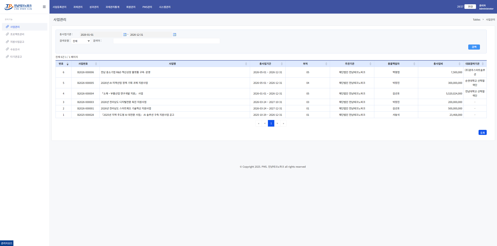
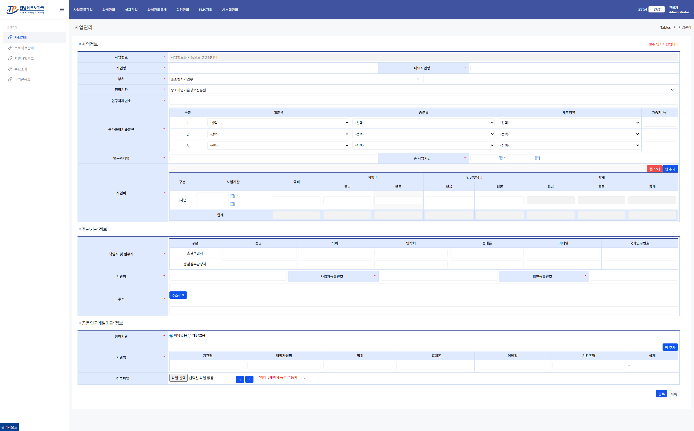
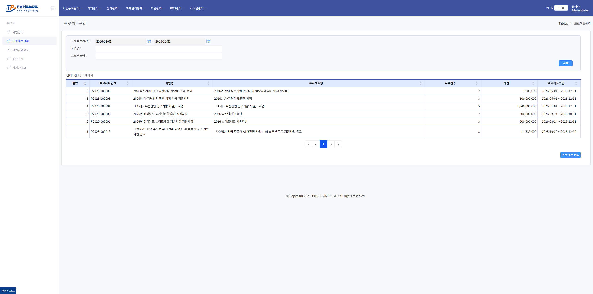
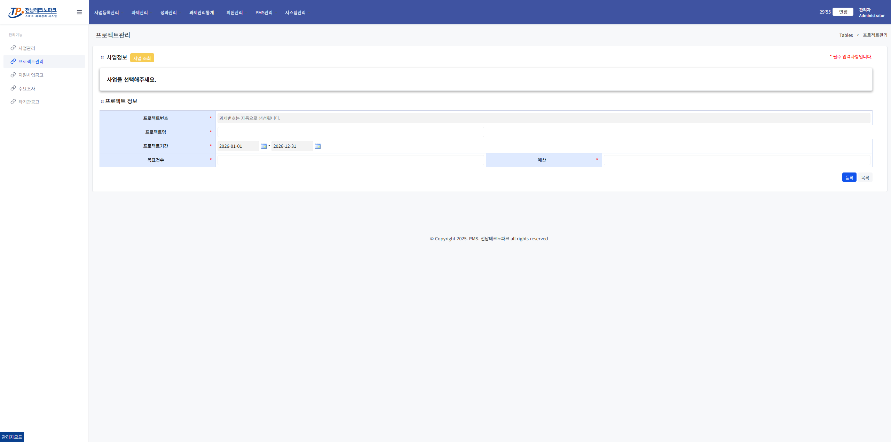

사업관리 / 프로젝트 관리 관리자
사업관리
1. 사업 목록 진입
상단 메뉴 「사업등록관리」 클릭 → 왼쪽 메뉴 「사업관리」 클릭

2. 「등록」 버튼 클릭
목록 오른쪽 하단 「등록」 클릭
⚠️ 주의사항
기존 사업 행 클릭 시 수정 화면으로 이동합니다.
3. 사업 정보 입력
| 영역 | 주요 항목 |
|---|---|
| ① 사업정보 | 사업명, 부처, 전담기관, 연구과제번호, 국가과학기술분류, 연구과제명, 사업비 |
| ② 주관기관 정보 | 책임자·실무자 정보, 기관명, 사업자·법인등록번호, 주소 |
| ③ 공동연구개발기관 | 참여기관 해당 여부, 기관 추가, 첨부파일 (최대 5개) |

⚠️ 주의사항
★ 표시 항목은 필수입니다.
4. 「등록」으로 저장
오른쪽 하단 「등록」 클릭 → 저장 완료 후 목록으로 자동 이동
⚠️ 주의사항
이후 프로젝트 관리에서 프로젝트를 등록해야 공고 등록이 가능합니다.
프로젝트 관리
1. 프로젝트 목록 진입
왼쪽 메뉴 「프로젝트 관리」 클릭

2. 「프로젝트 등록」 버튼 클릭
목록 오른쪽 하단 「프로젝트 등록」 클릭
3. 사업 선택
상단 「사업 조회」 버튼 클릭 → 등록된 사업 선택
⚠️ 주의사항
사업이 먼저 등록되어 있어야 합니다.
4. 프로젝트 정보 입력
| 항목 | 설명 |
|---|---|
| 프로젝트번호 | 자동 생성 |
| 프로젝트명 | 직접 입력 |
| 프로젝트기간 | 시작일 ~ 종료일 선택 |
| 목표건수 | 직접 입력 |
| 예산 | 직접 입력 |

⚠️ 주의사항
★ 표시 항목은 필수입니다.
5. 「등록」으로 저장
오른쪽 하단 「등록」 클릭 → 저장 완료 후 목록으로 자동 이동
⚠️ 주의사항
이후 지원사업공고에서 공고를 등록해야 기업이 신청할 수 있습니다.